Project Overview
The Online Examination Management System (OEMS) is a full-stack web application designed to conduct secure, scalable, and intelligent online examinations. The system integrates real-time AI-based proctoring with a robust backend architecture to ensure exam integrity, prevent malpractice, and provide seamless exam management for students and administrators.
Unlike basic exam portals, OEMS focuses heavily on security, automation, and real-time monitoring, combining computer vision with cloud infrastructure to simulate a controlled examination environment remotely.
Core Features
AI Proctoring System
The core strength of the system lies in its intelligent proctoring module powered by YOLOv8 and OpenCV.
- Real-time object detection using YOLOv8 (Ultralytics)
- Detection of mobile phones to prevent unfair assistance
- Detection of multiple persons in the frame indicating malpractice
- Continuous monitoring via webcam feed
- Automatic screenshot capture when suspicious activity is detected
- Conditional storage of evidence only when violations occur
- Confidence threshold tuning to reduce false positives
- Frame sampling optimization to balance performance and detection accuracy
This module ensures that the system is not just passive but actively enforces exam discipline.
Student Module
The student interface is designed to be simple yet secure, ensuring minimal distraction while maintaining strict control.
- Secure authentication system (JWT/session-based)
- Personalized dashboard displaying assigned exams
- Timer-based examination system with strict duration control
- Auto-submission upon timeout or rule violation
- Real-time proctoring activated during exams
- Prevention of tab switching, refresh attempts, and unauthorized navigation
- Smooth UI/UX for answering questions without lag
Teacher & Admin Module
The admin panel provides full control over exam lifecycle and monitoring.
- Create, update, and delete examinations
- Question bank management (MCQs)
- Assign exams to specific students or groups
- Monitor ongoing exams in real-time
- Access detailed proctoring reports with captured evidence
- View and analyze student performance
Note: Proper role-based access control (RBAC) is implemented to differentiate admin and teacher permissions.
Evaluation System
- Automatic evaluation of objective-type questions
- Instant result generation after submission
- Storage of results for future access
- Basic analytics for performance tracking
Cloud & Storage Integration
To handle evidence efficiently and cost-effectively:
- Integration with AWS S3 for storing violation screenshots
- Structured storage format:
user_id / exam_id / timestamp - Upload triggered only on detection events (not continuous streaming)
- Reduces unnecessary cloud storage costs
Security Features
Security is treated as a primary design concern rather than an afterthought.
- JWT-based authentication for secure session handling
- Input validation and sanitization across all endpoints
- Protection against: Multiple concurrent logins, Tab switching and window focus loss, Page refresh bypass attempts
- Secure REST API built using FastAPI
- Basic logging of suspicious activities and violations
Team & Contributions
Pranav R
Full-Stack AI Engineer- Spearheaded the overall project development, leading both the full-stack architecture and AI proctoring integration.
- Developed the core AI engine (YOLOv8), secure backend API (FastAPI), and cloud evidence pipeline (AWS S3).
Pratham (164)
Frontend DeveloperBuilt the secure exam interface and student dashboards, ensuring a seamless user experience.
Prathwik
Backend API DeveloperDeveloped the FastAPI backend architecture and integrated the database for secure data handling.
Technology Stack
- Frontend: HTML, CSS, JavaScript
- Backend: FastAPI / Flask (REST API architecture)
- AI & Computer Vision: YOLOv8 (Ultralytics), OpenCV
- Database: MySQL / PostgreSQL
- Cloud Services: AWS S3 (evidence storage)
System Interface & Walkthrough
1. Login
A secure authentication gateway featuring role-based routing to ensure users are directed to their specific functional dashboards.
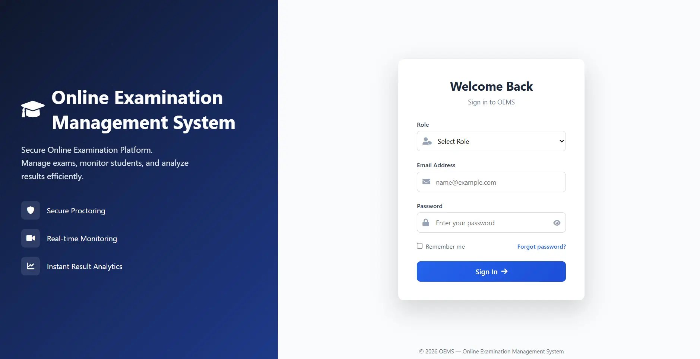
2. Superadmin Dashboard
The highest level of access designed for managing global system settings, institutional onboarding, and overall compliance.
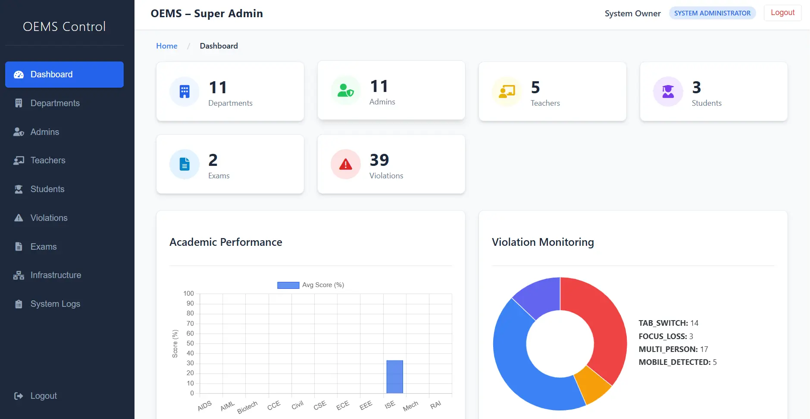
3. Admin Dashboard
An institutional control center for administrators to manage teacher accounts, student enrollments, and broad examination schedules.
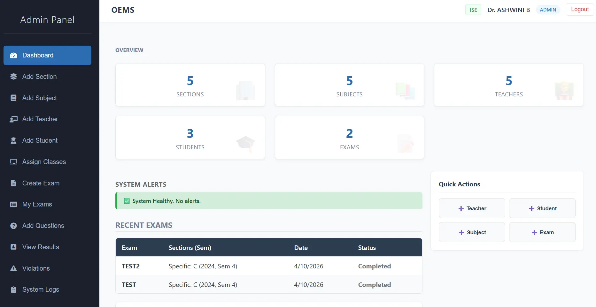
4. Teacher Dashboard
A dedicated interface for educators to create dynamic question banks, assign specific exams, and review detailed proctoring alerts.
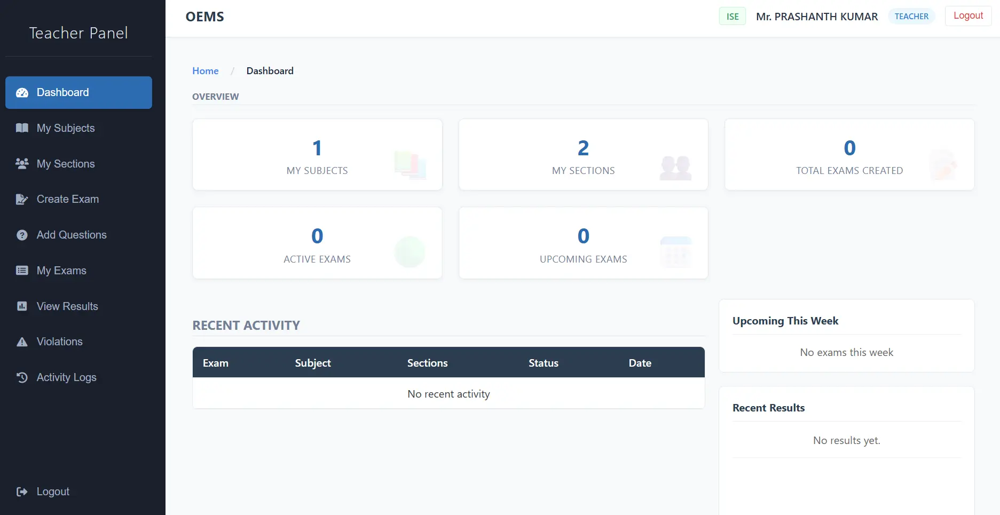
5. Student Dashboard
A secure, personalized portal where students access assigned exams, view upcoming schedules, and review past performance.
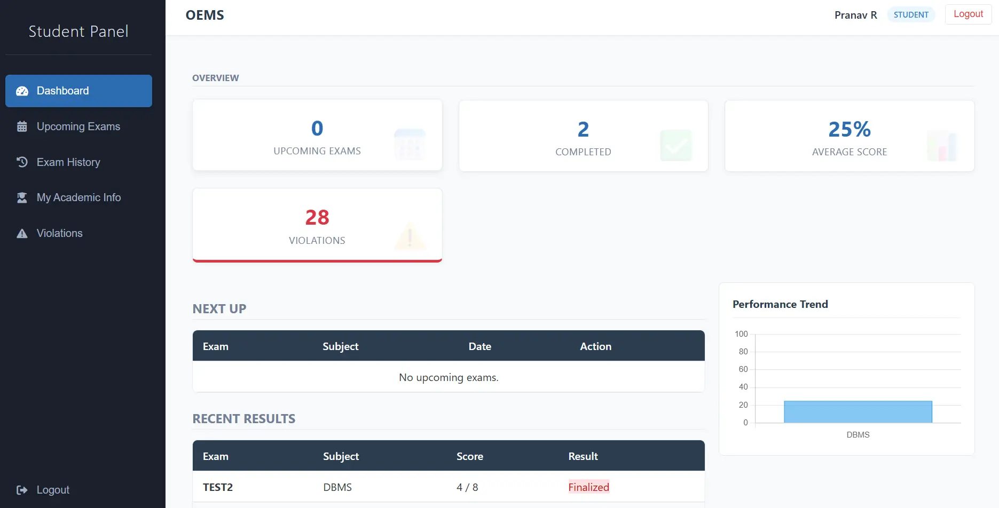
6. Secure Exam Interface
A distraction-free environment featuring a live countdown timer, strict tab-switching prevention, and active background monitoring.
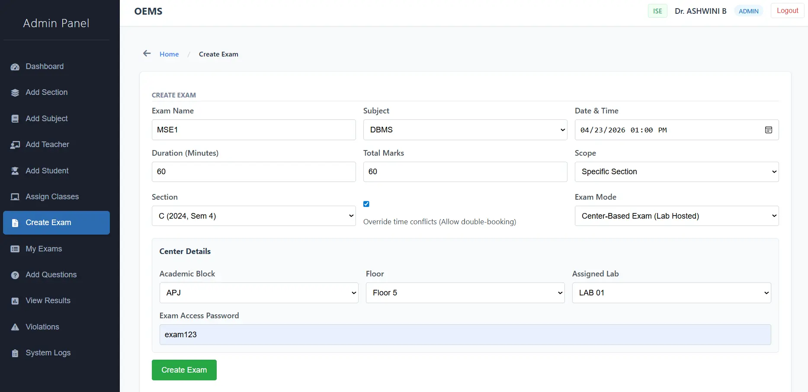
7. AI Detection (Proctoring)
The core YOLOv8 engine actively analyzes webcam feeds in real-time to detect mobile phones and unauthorized persons within the frame.
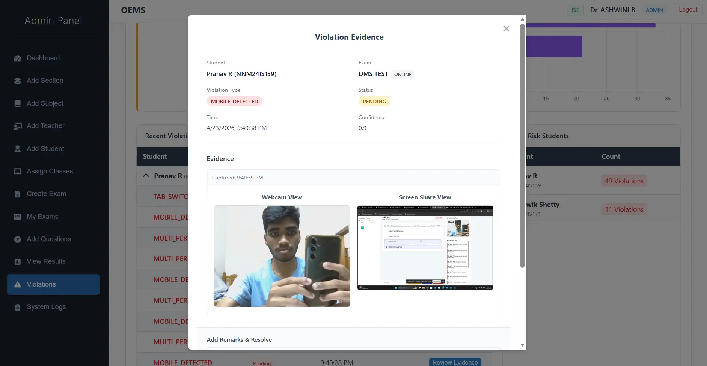
8. Violation Evidence
When the confidence threshold is met, the system conditionally captures the exact frame and securely uploads it to AWS S3, logging the event.
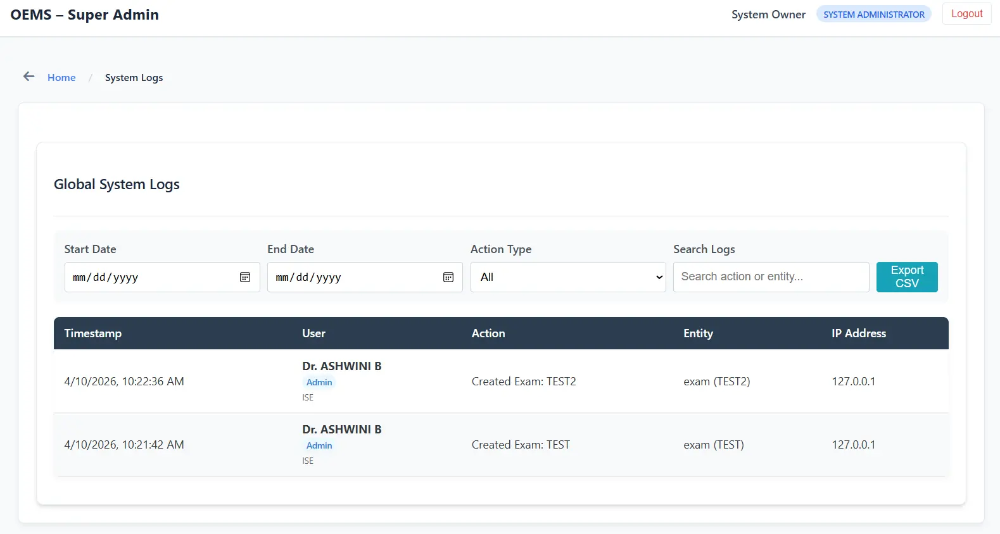
9. Results & Analytics
Instant, automated evaluation of submissions with granular performance analytics and scorecard generation.
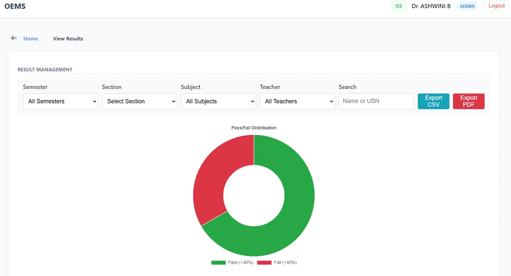
System Architecture
A highly modular data flow ensuring that heavy AI processing and cloud uploads only occur conditionally, preserving bandwidth and reducing AWS costs.
- Client (browser) captures video frames during the exam
- Frames are sent to the backend API at controlled intervals
- YOLO model processes frames for object detection
- If a violation is detected:
• Screenshot is captured
• Uploaded to AWS S3
• Event logged in database - Admin dashboard retrieves logs and evidence for review
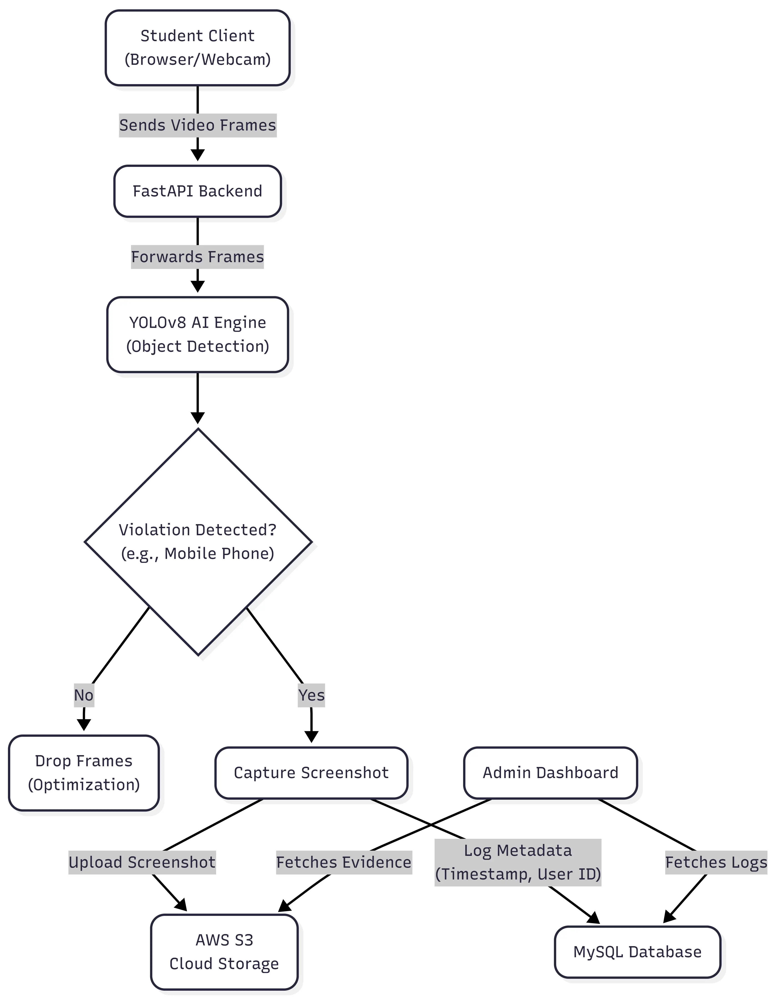
Database Design (ER Diagram)
The application relies on a robust relational database schema to seamlessly connect users, examinations, question banks, and AI proctoring evidence logs.
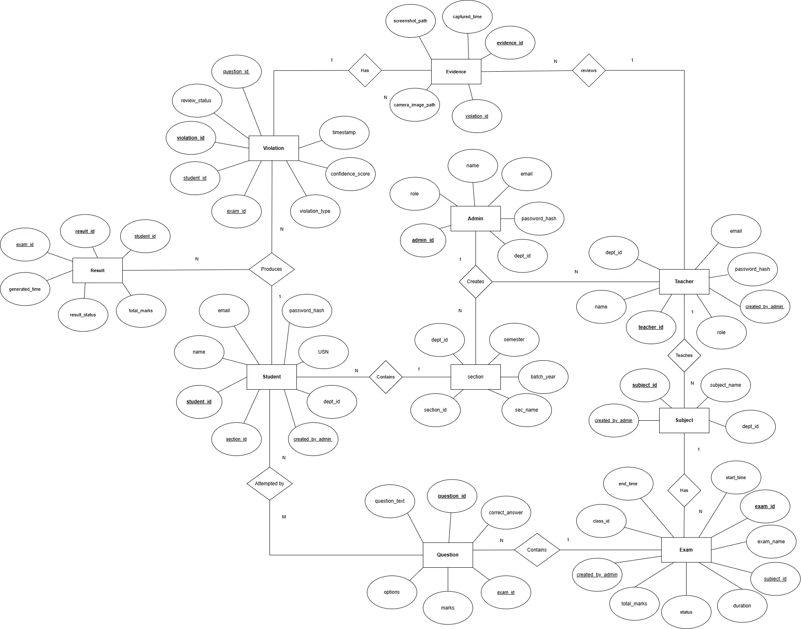
Challenges & Solutions
- Real-time Processing vs Performance: Continuous frame processing is computationally expensive.
Solution: Implemented frame skipping and asynchronous processing. - False Positives in Detection: Incorrect detections affecting credibility.
Solution: Tuned confidence thresholds and validation logic. - Cloud Cost Optimization: Storing large amounts of unnecessary data.
Solution: Conditional uploads only when violations occur. - Exam Security Loopholes: Users bypassing restrictions via refresh/tab switch.
Solution: Implemented strict session monitoring and event tracking.
Key Highlights
- Combines AI + full-stack + cloud
- Solves a real-world problem (exam malpractice)
- Shows system design thinking (not just UI)
- Goes beyond UI by addressing security and scalability
Academic Context & Guidance
This project was made for the subject DATABASE MANAGEMENT SYSTEMS (Course Code: CS2102-1), under the expert guidance of:
Mr. Prashanth Kumar
Designation: Assistant Professor Gd.II
Institution: NMAM Institute of Technology (NMAMIT), Nitte
Email: prashanth.kumar@nitte.edu.in
Future Improvements
- Role-Based Access Control (Admin / Teacher / Student separation)
- Advanced analytics dashboard
- Live proctoring dashboard for admins
- Integration with WebRTC for optimized video streaming
- AI model improvements for higher accuracy
- Deployment on scalable cloud infrastructure (AWS/GCP)